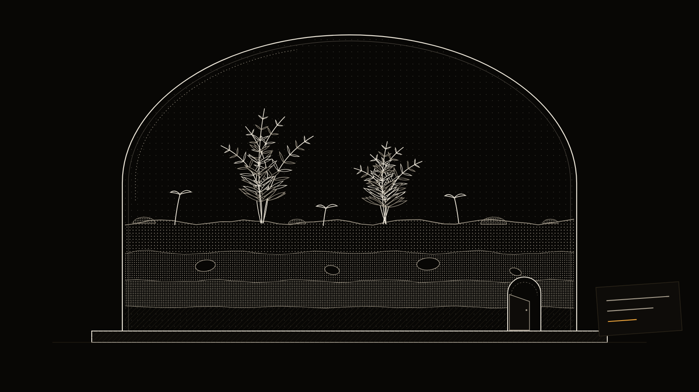

Writers
A book, a newsletter, a script. The agent reads your outline, your style notes and the last draft before it touches a word. It does not read your other projects.
Vivary is a desktop workspace for people who think in files. Notes, research, drafts, plans and code, each in its own project, in one window. Your agents read what you wrote before they work. They leave a receipt after.

Most agent tools were built for code and then pointed at everything else. Vivary starts from the other end. A project is a folder of things you wrote. Code is one kind of project. It is not the only kind.
A book, a newsletter, a script. The agent reads your outline, your style notes and the last draft before it touches a word. It does not read your other projects.
Sources, notes and claims stay inside the project. Ask for a summary and the answer names the files it came from. Ask what changed since last week and it can tell you.
Your notes are already the memory. Vivary reads the files you keep instead of building a memory you cannot open. Obsidian vault, plain folder, either works.
Claude Code and Codex run here the same way they run in your terminal, with your keys and your permission settings. The plan and the decisions sit next to the code as files.
An agent with your whole disk in front of it guesses. An agent with six files in front of it reads. Vivary does the choosing before the turn starts and the accounting after it ends.
Before a turn starts, Vivary hands the agent a bounded set of files: the ones that matter for this conversation, and nothing else. You can open the list. You can change it.
After the turn ends, Vivary writes down what happened. What it saw, what it changed, what it left alone. It is a text file. Read it, keep it, or delete it.
Short chapters. Plain names for plants, Latin in a footnote. The reader is a beginner with a shovel, not a botanist. Chapter four was cut on the twelfth. Do not bring it back as a chapter. A sidebar is fine.
That is a memory file. You wrote it, or the agent proposed a line and you approved it. It sits in the project folder as text. Open it in any editor. Change a line and the next conversation knows. Delete it and the agent forgets. There is no hidden store and no account holding a copy.
Memory is scoped to the project. Your field guide does not know about your grant application unless you say so.
Projects on the left. One conversation in the middle. Files open beside it when you ask. A project can hold several conversations, each with its own history and its own context.
Each project holds several. Start another when the context is full or the work is separate. The old one stays where it was.
Open beside the conversation when you ask. Reading a file does not send it to the model. Adding it to the conversation is a separate, visible step.
Approve, decline and Stop stay in view while the agent works. The agent you chose keeps its own tools and permission rules. Vivary does not add a second set.
Claude Code and Codex are your tools, installed on your machine, on your subscription. Vivary shows what the one you picked can actually do and keeps unknown states unknown.
There is no Vivary account and no cloud control plane. Vivary never sees your files. Nothing leaves your machine unless the agent you chose sends it, under the rules you gave it.
Plans, memory, decisions and receipts are text files in the project folder. Git is optional. Sync them, back them up, or open them in another tool. Nothing is locked in.
Underneath the window is the original Vivary engine, open source. It is what decides which files go in the capsule, what gets written down, and what needs a human before it becomes permanent.
Read the engine sourceVivary is in development, Windows first. It is not released. This page describes what it is built to do. The list below says what is working now and what is not. It is updated when the build moves.
The build happens in the open. Commits, decisions and the specification are on GitHub. Follow the build is the only ask on this page.